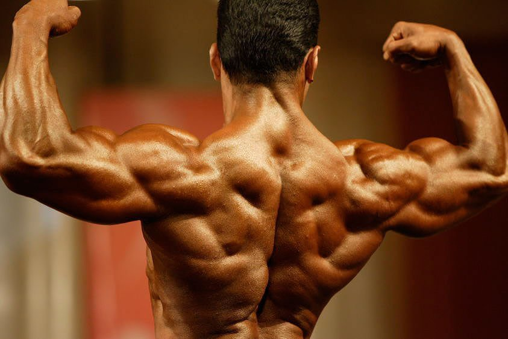
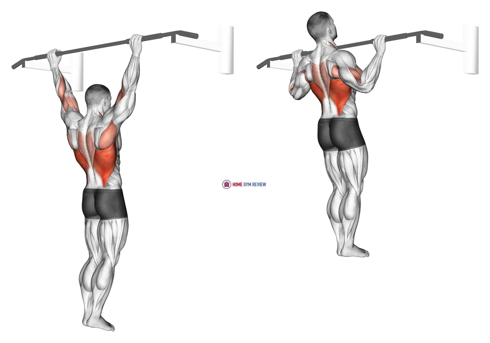
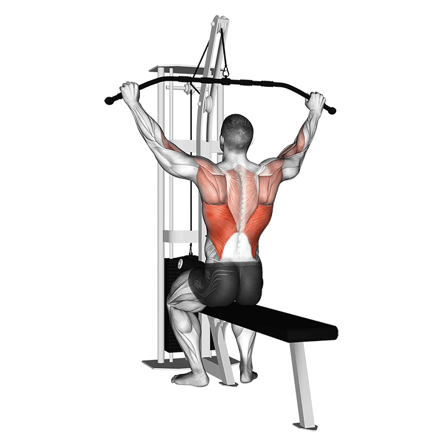
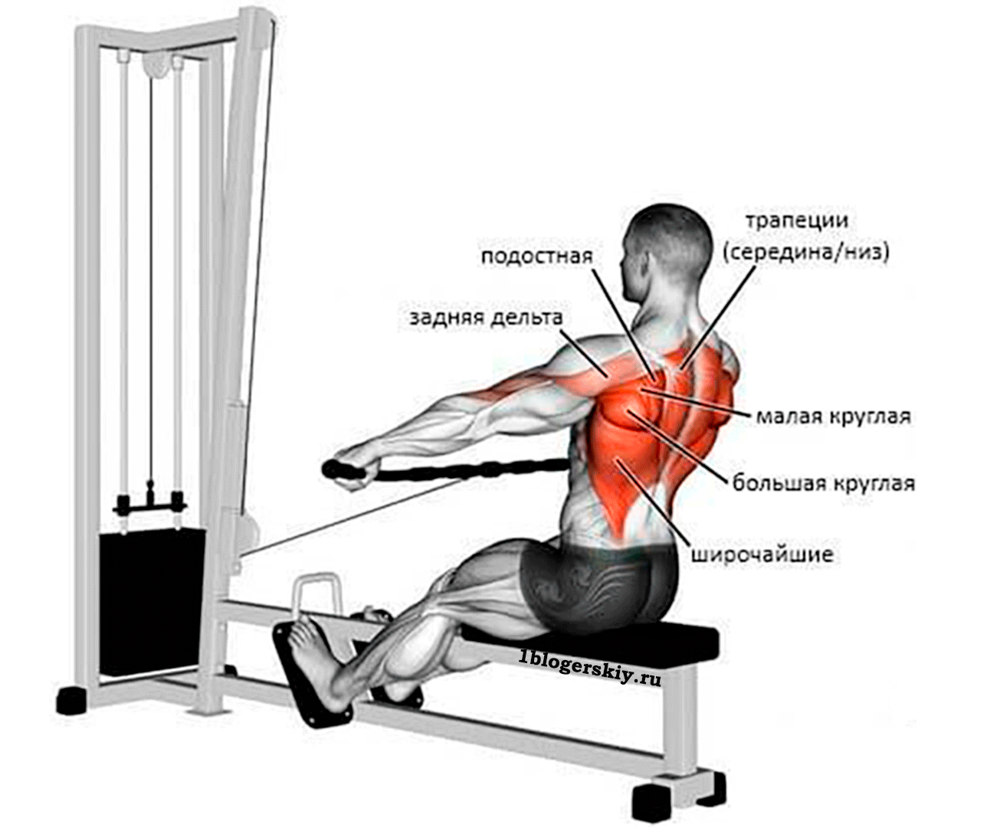
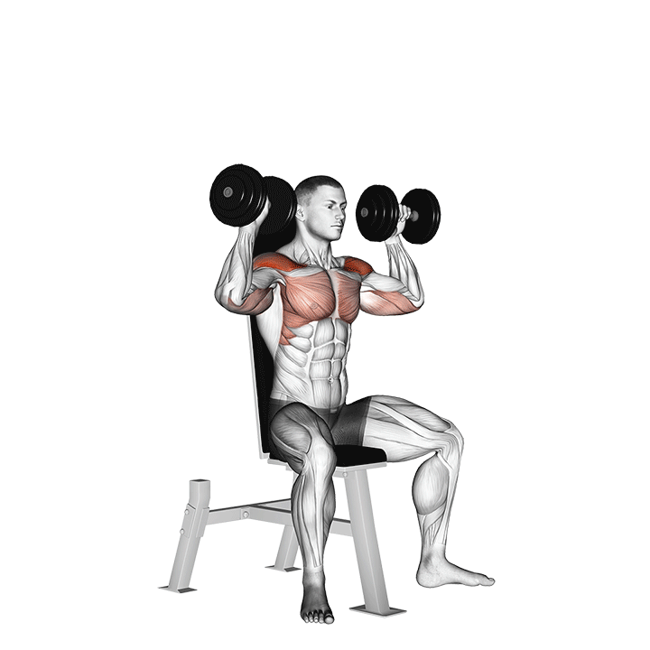

Программа тренировок

Второй день
Спина плечи:
1. Подтягивания (делаем 3,4 подхода почти на максимум)

2. Верхняя тяга

3. Нижняя тяга

4. Разведение рук в стороны

5. Жим гантелей сидя

Все упражения делаем 3 подхода по 10 повторений
Так же можете посмотреть дополнительное видео о том, как правильно качать спину и плечи, а так же понять правильную технику.
Программа тренировок на бицепс и трицепс
Программа тренировок на грудь и ноги
Питание